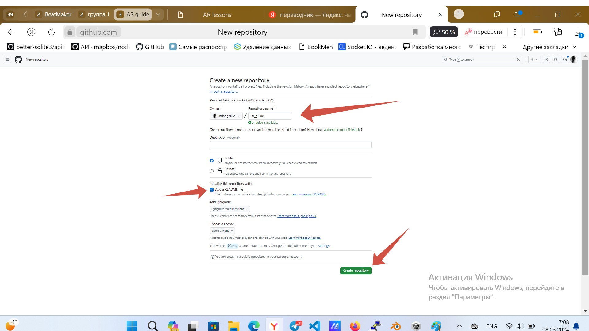
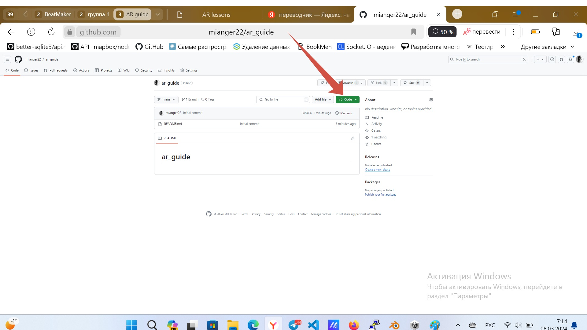
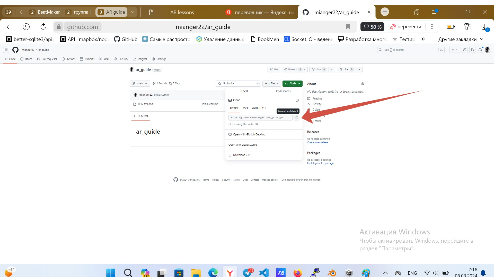
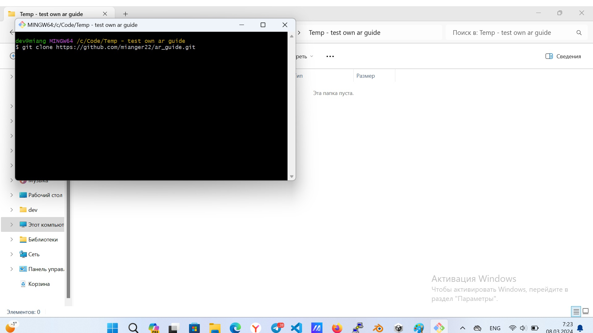
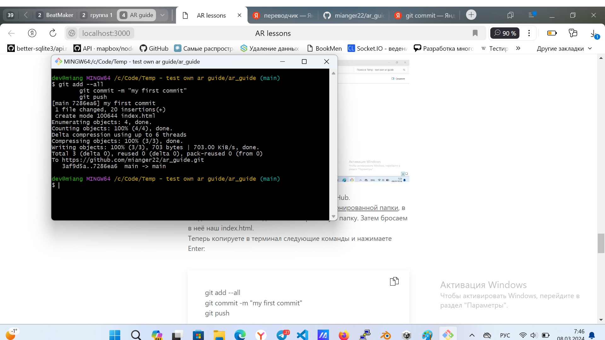
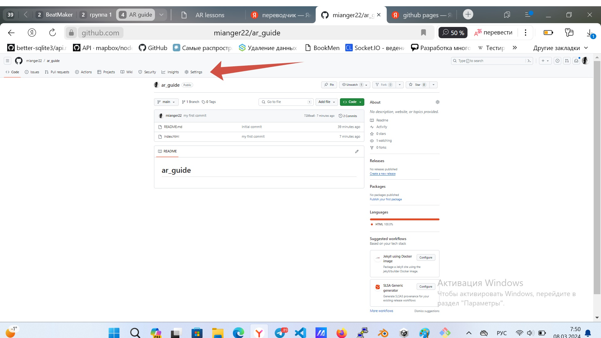
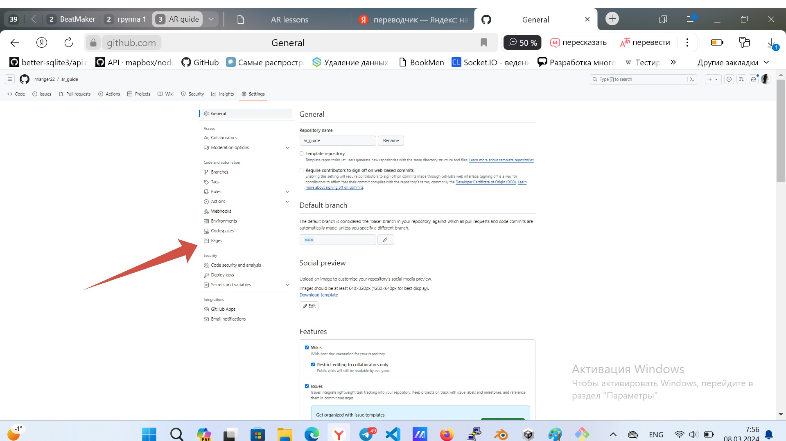
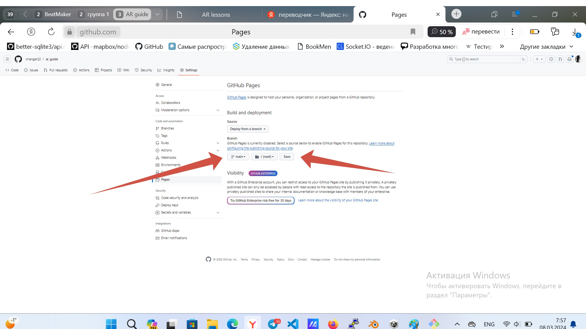

1. Устанавливаем необходимые инструменты
Привет всем! Итак, начнём мы с установки необходимых инструментов или обозначения установленных, их заменяющих.
1.1. Нам понадобится любая среда разработки: VSCode, WebStorm или что-нибудь другое.
1.2. GIT - обязательно. И желательно Git Bash. Иначе придётся делать в командной строке. Мне нравится Git Bash за удобство работы с GIT.
2. Создаём стандартный html-файл
Attention! Мы пишем <meta name="viewport" content="width=device-width, user-scalable=no, minimum-scale=1.0, maximum-scale=1.0">
вместо <meta name="viewport" content="width=device-width, initial-scale=1.0"> для того, чтобы камера была без неприятного и неудобного увеличения
3. Подключаем библиотеку AR.js
Прописываем подключение в разделе body:
4. Пишем AR-код
Что делает данный код?
Во-первых, a-scene создаёт сцену
Во-вторых, a-marker ищет маркер наведённой камерой. Его аттрибут preset="hiro" позволяет программе понять - какой маркер ей искать
Всё, что внутри - выводит нужное нам содержимое над маркеромю. У нас это текст
Внимание! Я использовал a-text вместо a-entity, для того чтобы текст был крупнее. Вы же можете использовать его:
Примечание. Что такое a-entity text ... и откуда я взял a-text читайте здесь
В итоге получился следующий код нашего первого AR-приложения:
5. Запускаем приложение
5.1. Для этого создаём репозиторий на гитхабе
Переходим по ссылке https://github.com/new. Заполняем Repository name (это название Вашего репозитория),
ставим галочку на Add a readme file (она упростит клонирование репозитория) и нажимаем Create repository.
В итоге Вы создали пустой репозиторий для запуска Вашего AR-приложения.

5.2. Клонируем репозиторий на свой ПК
Попав на страницу репозитория, жмём по зелёной кнопке Code и копируем значение из поля строки, кликнув по иконке сбоку.


5.3. Теперь открываем диск С, ищем место, где будет лежать наш склонированный проект
Если решили воспользоваться Git Bash, то кликаете в выбранном месте правой кнопкой, выбираете Open Git Bash here, запускаете. Если же остановились на командной строке, то, кликнув правой кнопкой мыши, выбираете Открыть в терминале.
Вводите git clone и нажимаете комбинацию Shift+Insert, чтобы вставилась скопированная строка с github`a, затем - Enter.
* Открытый терминал не закрывайте!

5.4. Теперь нужно залить наш index.html на GitHub
Для этого вводим cd наименование Вашей склонированной папки, в следствие чего Вы попадёте в склонированную папку. Затем бросаем в неё наш index.html.
Теперь копируете в терминал следующие команды и нажимаете Enter:

Что они делают?
-
а) git add --all добавляет все изменения в отслеживаемые
-
б) git commit -m "my first commit" сохраняет теперь уже отслеживаемые изменения
-
в) git push отправляет (сохраняет) изменения (наш код) на GitHub
Ура! Наш код сохранён. И мы его не потеряем в случае утраты компьютера.
5.5. Теперь запускаем наш проект, включив GitHub Pages
Для этого:
а) Заходим в настройки проекта

б) Открываем в левом блоке вкладку Pages

в) Меняем branch с none на main и нажимаем save

6. Наслаждаемся результатом
6.1. Cоздаём адрес в соответствие с шаблоном https://Ваш ник на GitHub.github.io/наименование Вашего репозитория. Например, у меня получился https://mianger22.github.io/ar_guide.
Сохраняем данный адрес, заливаем его в мессенджер, используемый Вами. Например, в Телеграмм.
6.2. Заходим по нему с телефона. Вуаля! Наше приложение запущено! тут анимация или смайл
6.3. Теперь наводим камерой на следующий маркер (мы его указывали в коде тегом a-marker preset="hiro" - маркер по умолчанию)
Наводим так, чтобы он уместился весь на экране и был как можно более параллелен смартфону. Ждём, пока наша программа проанализирует. В итоге у нас должен появиться текст My first AR application над маркером. Отдаляя камеру, Вы сможете прочитать его целиком 😏
Если получилось, поздравляю Вас с первой AR - программой. 🎉
Всё просто.
Список рекомендуемых к прочтению источников об AR
Все они были использованы мною для создания своего первого работающего приложения на AR и написаия данной статьи